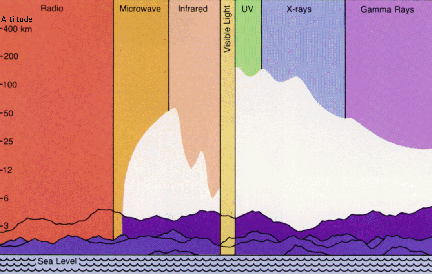

Why should we care about vibrations?
Since all matter has a vibrational pattern, from the smallest sub-atomic particle to the collections of particles that make up humans, the planet, the universe, and all that there is, it seems important! A vibration is measured by its frequency, or cycles. Depending on how many times it vibrates in a given time is its frequency.
The Electromagnetic Spectrum
The Electromagnetic Spectrum (a fancy term for different types of
radiation) is a band of measured waves, beginning at the radio
waves, infra red waves, the visible "light" waves, ultra
violet waves, x-ray waves and gamma ray waves. Cosmic rays aren't
included in the ES because they are not radiation, but instead are
high-energy charged particles that travel through space at nearly
the speed of light. Their extremely high energies are comparable to
those of gamma rays at the upper end of the electromagnetic
spectrum. The highest-energy cosmic rays originate outside our
galaxy and provide information on distant objects such as quasars.
Cosmic rays are detected when they hit the upper atmosphere,
creating showers of particles in their interaction with atoms. These
secondary particles can then be detected by instruments on the
ground.
Towards the center of the ES band, is a tiny segment known as "light" waves, which are still electromagnetic in form, and these light waves are the only visible light that the human eye can "see". The human eye can perceive a range of 3,600 to 7,600 angstrom units. Above or below that, the electromagnetic waves can not be seen. It is this very small segment of wave frequencies that we can see and hear, that makes other non-seen worlds plausible. We could quite possible be overlapping other worlds where we could not see them, or they us. If another world existed at a higher or lower vibrational rate (dimension) then this would be possible.

Sound
Sound has vibration as well and since sound has a near infinite
range of vibrations, it is indeed connected with all matter. It is
my opinion that when our inner sound matches that of our astral
mass, it causes the atoms to dissociate at the weaker bonds of the
whole mass and separation can occur. Scientists aren't the only ones
who acknowledge that sound is related to all matter; ancient wisdom
of the Sanatana Dharma states that the medium of creation is
"conscious sound vibration." According to the Vedas, the
universe was sung into being.
Magnetic Field
Anytime there is a flow of electrons, there is a magnetic field
created around that flow, an aura as it were (my hypothesized
magnetic body range), and anytime there is magnetism, it creates a
flow of electricity. It is the reduction of that electricity that
allows the inner sounds to begin resonating with the astral form
which causes the breakdown in the bonds that keep us attached.
Anne Varnes